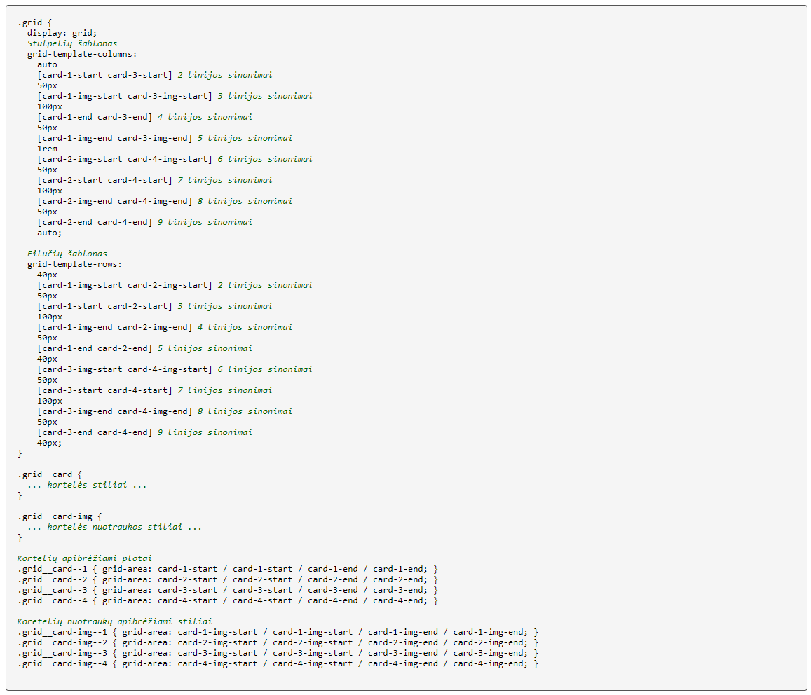
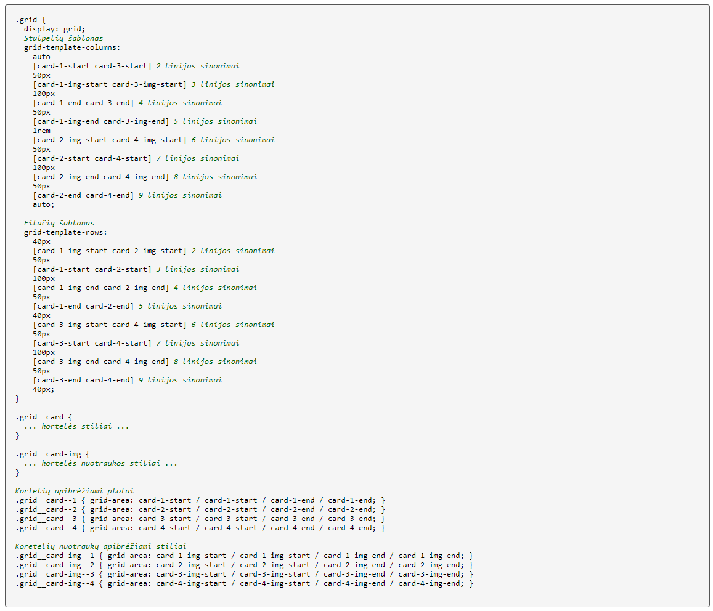

Įvardintos linijos
Kartais sudarant tinklelio plotų šablonus (angl.:
grid-template-areas) norima sudaryti persiklojančius
plotus. Tokiais atvejais, nėra įgalintos galimybės sukurti ploto
šablono, kuriame tą pačią vietą užimtų skirtingi plotai/sekcijos.
Šiai problemai spręsti yra naudojama įvardintų tinklelio linijų
metodologija.
Bet kuriai tinklelio linijai galima suteikti papildomus pavadinimus.
Tuomet vaikiniam elementam yra aprašomas plotas pagal linijų
apibrėžtumą: iš viršaus, kairės, apačios ir dešinės. Įvardinant
plotus tokiu būdu, galime įgalinti sekcijų persiklojimą.
Apibrėžus tinklelio vaikinius elementus įvardintomis linijomis,
galime keisti jų išdėstymus aprašant eilučių ir stulpelių šablonus
tėviniam elementus ir pervadinant kitas linijas, tokiais pat
pavadinimais, kokiomis yra apibrėžti vaikiniai elementai.
 
